Output
At the end of a model run the sediment and water balances are displayed in a message window. The water balance considers only elements that are within the estuary, i.e channel, tidal flats, saltmarsh and storage element.
Contents
Output Variables
Output variables are held in two tables: one contains variables that apply to all elements and the other has variables that only apply to reaches
Element output variables
- Moving Volume, 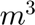, Volume of the element including any changes due to water level variations (e.g. due to slr and tidal range).
- Fixed Volume , Morphological volume of the element (excludes water level change)
- Equilibrium Volume, , Target volume defined by the specified equilibrium relationship
- Moving Depth, 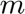, Depth of the element including any changes due to water level variations (e.g. due to slr and tidal range).
- Fixed Depth , Depth of the element relative to a fixed surface (excludes water level change)
- Equilibrium Depth, , Target depth defined by the specified equilibrium relationship
- Biological Production, , Volume of organic matter produced in the element
- Concentration, ppm, Sediment concentration in the element
- Water Level Change, , Water level change in the element
Reach output variables
- Reach Prism, , Volume of the tidal prism within each reach
- Tidal Prism, , Cumulative tidal prism for all reach elements upstream (*)
- Upstream CSA, 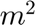, Cross-sectional area of the upstream interface of a reach
- River Flow, 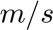, River flow velocity at the upstream interface of a reach
- Mean Water Level, 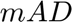, Mean sea level in each reach
- High Water evel, , High water level in each reach
- Low Water Level, , Low water level in each reach
- Tidal Range, , Tidal range in each reach
[ mAD – metres above datum. (*) - includes reach prism of the element ]
Interpretation when using water and sediment volumes (±n)

Elements using water volumes
The changes to the fixed volume, 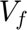, are due to sediment exchange, ignoring any changes in the water level. It can be thought of as the change in the water volume below a fixed initial surface (such as high water), or the morphological change. In contrast, the moving volume, 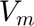, includes both the morphological changes and the water volume changes, and is equivalent to the total change in the water volume. Another way of thinking of this is that positive changes of the water volume, 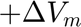 , increases the accommodation space, whereas the import of sediment into the element 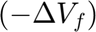 reduces it. Hence for a linear sea level rise the typical behaviour is for the fixed volume to reduce linearly and the moving volume to initially increase to create an excess water volume (model spin up in response to the imposition of the sea level perturbation) and then, if there is sufficient sediment supply, to be approximately constant. The adjustment of the moving volume, relative to the initial volume, implies the development of a constant over-depth (because the area of each element is constant). Any excess accommodation space due sea level rise is infilled albeit with a lag that reflects the morphological response time (Townend et al., 2007).
Elements using sediment volumes
Change in the fixed volume, , reflect import or export of sediment. The moving volume, , changes relative to the initial volume to reflect changes in sediment volume and any changes in the water volume. In this case it is only meaningful to think of this as changes in the accommodation space, relative to some initial volume. Under rising sea levels, changes in the moving volume, 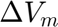 , are negative (because of the change in sign of n) and, if the element infills, there is a positive change in the fixed volume, 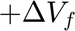. Thus, as with water volume elements, an increase in water level increases the accommodation space and import of sediment reduces it. Hence, in an infilling element the fixed volume, , increases over time, whereas the moving volume initially reduces and then becomes approximately constant. This again reflects the creation of a constant excess water volume, or over-depth, once the initial excess accommodation space, caused by the imposition of sea level rise, is infilled.
See Also
The manual provides further details of setup and configuration of the model.
Townend IH, Wang ZB, Rees JG, 2007, Millennial to annual volume changes in the Humber Estuary, Proc.R.Soc.A, 463, 837-854.